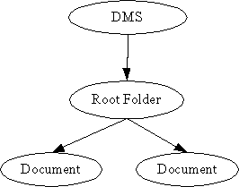

The ODMA Provider
Preface
The ODMA Content Provider (OCP) implements a Content Provider for the Universal Content Broker (UCB). It provides access to a document structure stored in a Document Management System (DMS).
OCP Content
The OCP Content provides two types of content; the document and the Root Folder.
The document Content corresponds to a document stored in the DMS.
The Root Folder exists at any time and is used to show all documents avaible at that time. All other OCP contents are children of this folder. The OCP Root Folder can only contain OCP Documents. It has the URL „vnd.sun.star.odma:/“.

Creation of new OCP Contents
OCP Folders implement the interface XContentCreator. OCP Root Folder supports the command „insert“. That's why the OCP Root Folder can create new OCP Streams. To create a new OCP Streams:
Let the root folder create a new content by calling its createNewContent-method. The content type to use for new streams is application/vnd.sun.star.odma.
Set a title at the new stream. ( Let the new child execute a setPropertyValues – command, which sets at least the property „Title“ to a non-empty value ).
Other properties which may be set are
Author,
Subject and
Keywords
Let the new child ( not the parent! ) execute the command „transfer“. This will commit the creation process. You need to supply the implementation of an XInputStream with the command's parameters, that provides access to the stream data.
URL Scheme for OCP Contents
Each OCP content has an identifier corresponding to the following scheme:
vnd.sun.star.odma:/<name>
where <name> is the DocumentID given by the DMS.
Examples:
vnd.sun.star.odma:/ ( The URL of the OCP Root Folder )
vnd.sun.star.odma:/ a document id given by the DMS
vnd.sun.star.odma:/::ODMA\DMS_ID\DM_SPECIFIC_INFO
Appendix
The following table gives an overview of the different OCP contents.
|
|
UCB Type (returned by XContent::getContentType ) |
Properties |
Commands |
Interfaces |
|---|---|---|---|---|
|
Document |
application/vnd.sun.star.odma |
[readonly] ContentType [readonly] DateCreated [readonly] DateModified [readonly] IsDocument [readonly] IsFolder Title Author Subject Keywords |
getCommandInfo getPropertySetInfo getPropertyValues setPropertyValues delete open close
|
lang::XTypeProvider, lang::XServiceInfo lang::XComponent ucb::XContent ucb::XCommandProcessor beans::XPropertiesChangeNotifier beans::XPropertyContainer beans::XPropertySetInfoChangeNotifier ucb::XCommandInfoChangeNotifier container::XChild |
|
Root Folder |
application/vnd.sun.star.odma |
[readonly] ContentType [readonly] DateCreated [readonly] DateModified [readonly] IsDocument [readonly] IsFolder |
getCommandInfo getPropertySetInfo getPropertyValues setPropertyValues transfer delete open close |
same as OCP Folder, plus ucb::XContentCreator |
More information about ODMA can be found at www.infonuovo.com/odma/
To enable ODMA the following basic macro has to executed to insert the settings needed in the Configuration.
EM ***** BASIC ***** ' Option Explicit Sub RegisterUcpOdma Dim aConfigProvider As Object Dim aConfiguration As Object Dim aFilters as Object Dim aNewNode as Object Dim nResponse as Integer Dim bAddNode as Boolean ' access the global configuration provider aConfigProvider = createUnoService( "com.sun.star.configuration.ConfigurationProvider" ) ' create an access object for TypeDetection module Dim aParams(0) As new com.sun.star.beans.PropertyValue aParams(0).Name = "nodepath" aParams(0).Value = "/org.openoffice.ucb.Configuration" aConfiguration = aConfigProvider.createInstanceWithArguments( _ "com.sun.star.configuration.ConfigurationUpdateAccess", _ aParams() ) ' open the set node for the types aContentProviders = aConfiguration.getByName( "ContentProviders" ) aContentProvidersDataPrimaryKeys = aContentProviders.getByName( "Local" ) aSecondaryKeys = aContentProvidersDataPrimaryKeys.getByName( "SecondaryKeys" ) aContentProvidersDataSecondaryKeys = aSecondaryKeys.getByName( "Office" ) aProviderData = aContentProvidersDataSecondaryKeys.getByName( "ProviderData" ) ' existence check bAddNode = TRUE dim xx() as string xx() = aProviderData.getElementNames for i=LBOUND(xx) to UBOUND(xx) aContentProviderData = aProviderData.getByName( xx(i) ) if ( aContentProviderData.ServiceName = "com.sun.star.ucb.OdmaContentProvider" ) Then nResponse = MsgBox( "The type is already present in the configuration! Overwrite?", 4 ) if ( 6 = nResponse ) Then aProviderData.removeByName( xx(i) ) Else bAddNode = FALSE End If End If next i if ( bAddNode ) Then ' create a new node for the new type aContentProviderData = aProviderData.createInstance( ) ' fill this new type node aContentProviderData.ServiceName = "com.sun.star.ucb.OdmaContentProvider" aContentProviderData.URLTemplate = "vnd.sun.star.odma" ' insert this new type aProviderData.insertByName( "Provider" + (UBOUND(xx) - LBOUND(xx) + 2), aContentProviderData ) End If ' commit the changes done aConfiguration.commitChanges( ) ' register the component implementing the filter ' RegisterFilterComponent( ) End Sub Sub RegisterFilterComponent Dim oRegistry as Object Dim oImplReg as Object oRegistry = createUnoService( "com.sun.star.registry.SimpleRegistry" ) oImplReg = createUnoService( "com.sun.star.registry.ImplementationRegistration" ) if ( IsNull( oRegistry ) Or IsNull( oImplReg ) ) Then MsgBox "could not create the components necessary for registering the component!" Exit Sub End If On Local Error Resume Next oRegistry.open( "applicat.rdb", FALSE, FALSE ) if ( Not oRegistry.IsValid() ) Then MsgBox "could not open the registry!" Exit Sub End If On Local Error Goto 0 oImplReg.registerImplementation( "com.sun.star.loader.SharedLibrary", "ucpodma1.dll", oRegistry ) End Sub